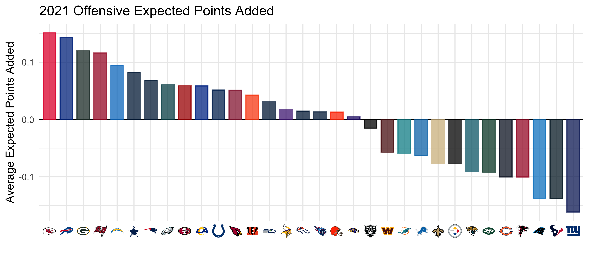

Outrageously efficient
exploratory data analysis
with Apache Arrow and dplyr
Tom Mock, Customer Enablement Lead at
2022-06-03
github.com/jthomasmock/arrow-dplyr


arrow
arrowis software development platform for building high performance applications that process and transport large data sets
- The
arrowR package is an interface to data via thearrowbackend, and has deep integration withdplyr:- Ungrouped
mutate(),filter(),select()was available inarrow5.0
-
group_by()+summarize()aggregation was added inarrow6.0
- More complex
dplyroperations were added inarrow7.0 and 8.0
- Ungrouped
-
arrowdata can also be “handed off” toduckdbwithto_duckdb()for anydbplyrcommands without data conversion. IE no serialization or data copying costs are incurred.
Working with bigger data?
- Relational databases (IE SQL) are still around and hugely popular but…
- Data and specifically local files are getting bigger
- Additionally, many Data Warehouses/Data Lakes use flat-file storage (
.csv,.parquet,.jsonetc) - there are query engines in many environments, but you can often end up with large extracts.
So, how do you work with data extracts that aren’t already in a database, and are bigger than your memory?
Pause for one second
If it can fit in memory, then try out:
-
vroom::vroom()ordata.table::fread()for fast file reads into R-
vroom(col_select = c(column_name))also allows for partial reads (ie specific columns)
-
arrowitself also has crazy fast file reads on many file types
-
-
data.tableor thedplyrfront-end todata.tableviadtplyrfor fast and efficient in-memory analysis
- Lastly, the
collapseR package for limited capability, but hyper-performant data manipulation
Fill your quiver with arrows
Using tictoc to watch cute dog videos time our computations.


On to arrow
There are great examples of data analysis on big data (2 billion rows) in the arrow docs.
For today, I’m going to focus on biggish data but manageable data!
If we were to use CSVs, this would be about 2.19 GB of data
But because we’re using arrow, we can use more efficient parquet files. This data on disk is about 82% smaller at 388 MB.
So not THAT big but 372 columns and 1.1 million rows is plenty.
tic()
ds <- arrow::open_dataset("data-parquet", partitioning = "season")
dims <- glue::glue(
"{ds |> names() |> length()} cols by ",
"{scales::label_number(big.mark = ',')(ds |> count() |> collect() |> pull())} rows"
)
toc()0.218 sec elapsed372 cols by 1,098,570 rows
nflfastR data
The data we’re focused on today is big enough (1 million rows by 372 columns, about 2.2 GB uncompressed) and corresponds to every NFL play in every game from 1999 to 2021. The data is all available from the {nflverse} Github.
To use it efficiently, we’ve partitioned the data up into each season
data-parquet/
├── 1999
│ └── data.parquet
├── 2000
│ └── data.parquet
├── 2001
│ └── data.parquet
├── 2002
│ └── data.parquet
├── 2003
│ └── data.parquet
├── 2004
│ └── data.parquet
├── 2005
│ └── data.parquet
├── 2006
│ └── data.parquet
├── 2007
│ └── data.parquet
├── 2008
│ └── data.parquet
├── 2009
│ └── data.parquet
├── 2010
│ └── data.parquet
├── 2011
│ └── data.parquet
├── 2012
│ └── data.parquet
├── 2013
│ └── data.parquet
├── 2014
│ └── data.parquet
├── 2015
│ └── data.parquet
├── 2016
│ └── data.parquet
├── 2017
│ └── data.parquet
├── 2018
│ └── data.parquet
├── 2019
│ └── data.parquet
├── 2020
│ └── data.parquet
└── 2021
└── data.parquetNock the arrow
We can prepare our data to be used with arrow::open_dataset()
FileSystemDataset with 23 Parquet files
play_id: double
game_id: string
old_game_id: string
home_team: string
away_team: string
season_type: string
week: int32
posteam: string
posteam_type: string
defteam: string
side_of_field: string
yardline_100: double
game_date: string
quarter_seconds_remaining: double
half_seconds_remaining: double
game_seconds_remaining: double
game_half: string
quarter_end: double
drive: double
sp: double
qtr: double
down: double
goal_to_go: double
time: string
yrdln: string
ydstogo: double
ydsnet: double
desc: string
play_type: string
yards_gained: double
shotgun: double
no_huddle: double
qb_dropback: double
qb_kneel: double
qb_spike: double
qb_scramble: double
pass_length: string
pass_location: string
air_yards: double
yards_after_catch: double
run_location: string
run_gap: string
field_goal_result: string
kick_distance: double
extra_point_result: string
two_point_conv_result: string
home_timeouts_remaining: double
away_timeouts_remaining: double
timeout: double
timeout_team: string
td_team: string
td_player_name: string
td_player_id: string
posteam_timeouts_remaining: double
defteam_timeouts_remaining: double
total_home_score: double
total_away_score: double
posteam_score: double
defteam_score: double
score_differential: double
posteam_score_post: double
defteam_score_post: double
score_differential_post: double
no_score_prob: double
opp_fg_prob: double
opp_safety_prob: double
opp_td_prob: double
fg_prob: double
safety_prob: double
td_prob: double
extra_point_prob: double
two_point_conversion_prob: double
ep: double
epa: double
total_home_epa: double
total_away_epa: double
total_home_rush_epa: double
total_away_rush_epa: double
total_home_pass_epa: double
total_away_pass_epa: double
air_epa: double
yac_epa: double
comp_air_epa: double
comp_yac_epa: double
total_home_comp_air_epa: double
total_away_comp_air_epa: double
total_home_comp_yac_epa: double
total_away_comp_yac_epa: double
total_home_raw_air_epa: double
total_away_raw_air_epa: double
total_home_raw_yac_epa: double
total_away_raw_yac_epa: double
wp: double
def_wp: double
home_wp: double
away_wp: double
wpa: double
vegas_wpa: double
vegas_home_wpa: double
home_wp_post: double
away_wp_post: double
vegas_wp: double
vegas_home_wp: double
total_home_rush_wpa: double
total_away_rush_wpa: double
total_home_pass_wpa: double
total_away_pass_wpa: double
air_wpa: double
yac_wpa: double
comp_air_wpa: double
comp_yac_wpa: double
total_home_comp_air_wpa: double
total_away_comp_air_wpa: double
total_home_comp_yac_wpa: double
total_away_comp_yac_wpa: double
total_home_raw_air_wpa: double
total_away_raw_air_wpa: double
total_home_raw_yac_wpa: double
total_away_raw_yac_wpa: double
punt_blocked: double
first_down_rush: double
first_down_pass: double
first_down_penalty: double
third_down_converted: double
third_down_failed: double
fourth_down_converted: double
fourth_down_failed: double
incomplete_pass: double
touchback: double
interception: double
punt_inside_twenty: double
punt_in_endzone: double
punt_out_of_bounds: double
punt_downed: double
punt_fair_catch: double
kickoff_inside_twenty: double
kickoff_in_endzone: double
kickoff_out_of_bounds: double
kickoff_downed: double
kickoff_fair_catch: double
fumble_forced: double
fumble_not_forced: double
fumble_out_of_bounds: double
solo_tackle: double
safety: double
penalty: double
tackled_for_loss: double
fumble_lost: double
own_kickoff_recovery: double
own_kickoff_recovery_td: double
qb_hit: double
rush_attempt: double
pass_attempt: double
sack: double
touchdown: double
pass_touchdown: double
rush_touchdown: double
return_touchdown: double
extra_point_attempt: double
two_point_attempt: double
field_goal_attempt: double
kickoff_attempt: double
punt_attempt: double
fumble: double
complete_pass: double
assist_tackle: double
lateral_reception: double
lateral_rush: double
lateral_return: double
lateral_recovery: double
passer_player_id: string
passer_player_name: string
passing_yards: double
receiver_player_id: string
receiver_player_name: string
receiving_yards: double
rusher_player_id: string
rusher_player_name: string
rushing_yards: double
lateral_receiver_player_id: string
lateral_receiver_player_name: string
lateral_receiving_yards: double
lateral_rusher_player_id: string
lateral_rusher_player_name: string
lateral_rushing_yards: double
lateral_sack_player_id: string
lateral_sack_player_name: string
interception_player_id: string
interception_player_name: string
lateral_interception_player_id: string
lateral_interception_player_name: string
punt_returner_player_id: string
punt_returner_player_name: string
lateral_punt_returner_player_id: string
lateral_punt_returner_player_name: string
kickoff_returner_player_name: string
kickoff_returner_player_id: string
lateral_kickoff_returner_player_id: string
lateral_kickoff_returner_player_name: string
punter_player_id: string
punter_player_name: string
kicker_player_name: string
kicker_player_id: string
own_kickoff_recovery_player_id: string
own_kickoff_recovery_player_name: string
blocked_player_id: string
blocked_player_name: string
tackle_for_loss_1_player_id: string
tackle_for_loss_1_player_name: string
tackle_for_loss_2_player_id: string
tackle_for_loss_2_player_name: string
qb_hit_1_player_id: string
qb_hit_1_player_name: string
qb_hit_2_player_id: string
qb_hit_2_player_name: string
forced_fumble_player_1_team: string
forced_fumble_player_1_player_id: string
forced_fumble_player_1_player_name: string
forced_fumble_player_2_team: string
forced_fumble_player_2_player_id: string
forced_fumble_player_2_player_name: string
solo_tackle_1_team: string
solo_tackle_2_team: string
solo_tackle_1_player_id: string
solo_tackle_2_player_id: string
solo_tackle_1_player_name: string
solo_tackle_2_player_name: string
assist_tackle_1_player_id: string
assist_tackle_1_player_name: string
assist_tackle_1_team: string
assist_tackle_2_player_id: string
assist_tackle_2_player_name: string
assist_tackle_2_team: string
assist_tackle_3_player_id: string
assist_tackle_3_player_name: string
assist_tackle_3_team: string
assist_tackle_4_player_id: string
assist_tackle_4_player_name: string
assist_tackle_4_team: string
tackle_with_assist: double
tackle_with_assist_1_player_id: string
tackle_with_assist_1_player_name: string
tackle_with_assist_1_team: string
tackle_with_assist_2_player_id: string
tackle_with_assist_2_player_name: string
tackle_with_assist_2_team: string
pass_defense_1_player_id: string
pass_defense_1_player_name: string
pass_defense_2_player_id: string
pass_defense_2_player_name: string
fumbled_1_team: string
fumbled_1_player_id: string
fumbled_1_player_name: string
fumbled_2_player_id: string
fumbled_2_player_name: string
fumbled_2_team: string
fumble_recovery_1_team: string
fumble_recovery_1_yards: double
fumble_recovery_1_player_id: string
fumble_recovery_1_player_name: string
fumble_recovery_2_team: string
fumble_recovery_2_yards: double
fumble_recovery_2_player_id: string
fumble_recovery_2_player_name: string
sack_player_id: string
sack_player_name: string
half_sack_1_player_id: string
half_sack_1_player_name: string
half_sack_2_player_id: string
half_sack_2_player_name: string
return_team: string
return_yards: double
penalty_team: string
penalty_player_id: string
penalty_player_name: string
penalty_yards: double
replay_or_challenge: double
replay_or_challenge_result: string
penalty_type: string
defensive_two_point_attempt: double
defensive_two_point_conv: double
defensive_extra_point_attempt: double
defensive_extra_point_conv: double
safety_player_name: string
safety_player_id: string
season: int32
cp: double
cpoe: double
series: double
series_success: double
series_result: string
order_sequence: double
start_time: string
time_of_day: string
stadium: string
weather: string
nfl_api_id: string
play_clock: string
play_deleted: double
play_type_nfl: string
special_teams_play: double
st_play_type: string
end_clock_time: string
end_yard_line: string
fixed_drive: double
fixed_drive_result: string
drive_real_start_time: string
drive_play_count: double
drive_time_of_possession: string
drive_first_downs: double
drive_inside20: double
drive_ended_with_score: double
drive_quarter_start: double
drive_quarter_end: double
drive_yards_penalized: double
drive_start_transition: string
drive_end_transition: string
drive_game_clock_start: string
drive_game_clock_end: string
drive_start_yard_line: string
drive_end_yard_line: string
drive_play_id_started: double
drive_play_id_ended: double
away_score: int32
home_score: int32
location: string
result: int32
total: int32
spread_line: double
total_line: double
div_game: int32
roof: string
surface: string
temp: int32
wind: int32
home_coach: string
away_coach: string
stadium_id: string
game_stadium: string
aborted_play: double
success: double
passer: string
passer_jersey_number: int32
rusher: string
rusher_jersey_number: int32
receiver: string
receiver_jersey_number: int32
pass: double
rush: double
first_down: double
special: double
play: double
passer_id: string
rusher_id: string
receiver_id: string
name: string
jersey_number: int32
id: string
fantasy_player_name: string
fantasy_player_id: string
fantasy: string
fantasy_id: string
out_of_bounds: double
home_opening_kickoff: double
qb_epa: double
xyac_epa: double
xyac_mean_yardage: double
xyac_median_yardage: double
xyac_success: double
xyac_fd: double
xpass: double
pass_oe: doublePull the arrow back with dplyr
summarize_df <- ds |>
filter(season == 2021, play_type %in% c("pass", "run")) |>
filter(!is.na(epa)) |>
select(posteam, epa) |>
group_by(posteam) |>
summarize(n = n(), avg_epa = mean(epa))
print(summarize_df)FileSystemDataset (query)
posteam: string
n: int32
avg_epa: double
See $.data for the source Arrow objectNote that while the computation has occurred, we really haven’t “seen it” yet. Printing just reports back the 3x columns and their type.
Release the arrow into memory with collect()
We can execute the collect() function to finally pull the output into memory and display the result.
Release the arrow into memory with collect()
Once it’s pulled into memory, it’s like any other in-memory object!
library(ggplot2)
collect(summarize_df) |>
ggplot(aes(x = forcats::fct_reorder(posteam, desc(avg_epa)), y = avg_epa)) +
theme_minimal() + geom_hline(yintercept = 0, color = "black") +
geom_col(aes(color = posteam, fill = posteam), width = 0.75) +
nflplotR::scale_fill_nfl(alpha = 0.75, aesthetics = c("color", "fill")) +
guides(color = "none", fill = "none") +
theme(axis.text.x = nflplotR::element_nfl_logo()) +
labs(x = "", y = "Average Expected Points Added", title = "2021 Offensive Expected Points Added")
Bigger and faster
We can operate across all the rows extremely quickly!
tic()
all_comp <- ds |>
filter(!is.na(epa)) |>
group_by(posteam, play_type) |>
summarize(
n = n(),
avg_epa = mean(epa),
.groups = "drop"
) |>
collect() |>
mutate(total = scales::label_number(big.mark = ",")(sum(n)))
toc()0.147 sec elapsed# A tibble: 325 × 5
posteam play_type n avg_epa total
<chr> <chr> <int> <dbl> <chr>
1 WAS kickoff 1898 0.235 1,080,552
2 WAS run 10093 -0.0591 1,080,552
3 WAS pass 13474 -0.0231 1,080,552
4 WAS field_goal 722 -0.172 1,080,552
5 ARI kickoff 1961 0.195 1,080,552
6 ARI pass 14413 -0.0565 1,080,552
7 ARI run 9181 -0.103 1,080,552
8 ARI field_goal 688 -0.0544 1,080,552
9 ARI extra_point 795 0.00767 1,080,552
10 WAS <NA> 458 -0.0308 1,080,552
# … with 315 more rowsBetter exploratory data analysis
While arrow + dplyr can be combined for extremely efficient and fast data analysis, having to collect() into memory when the results may be very large is not ideal.
Enter the arrow::to_duckdb() function! This is essentially a zero-cost operation that will treat the on-disk data in place as a duckdb database!
tic()
duck_out <- ds |>
select(posteam, play_type, season, defteam, epa) |>
filter(!is.na(epa)) |>
to_duckdb() |>
filter(epa >= 0)
toc()0.271 sec elapsed# Source: lazy query [?? x 5]
# Database: duckdb_connection
posteam play_type season defteam epa
<chr> <chr> <int> <chr> <dbl>
1 PHI kickoff 1999 ARI 0.127
2 PHI pass 1999 ARI 0.213
3 PHI punt 1999 ARI 1.03
4 ARI punt 1999 PHI 0.0682
5 PHI run 1999 ARI 0.361
6 PHI pass 1999 ARI 1.00
7 PHI pass 1999 ARI 0.0267
8 PHI pass 1999 ARI 0.930
9 PHI run 1999 ARI 3.15
10 PHI extra_point 1999 ARI 0.0306
# … with more rowsMore arrows for more duckdbs
ds |>
select(posteam, play_type, season, epa) |>
filter(
!is.na(epa),
play_type %in% c("run", "pass")) |>
to_duckdb() |>
filter(epa >= 0) # Source: lazy query [?? x 4]
# Database: duckdb_connection
posteam play_type season epa
<chr> <chr> <int> <dbl>
1 PHI pass 1999 0.213
2 PHI run 1999 0.361
3 PHI pass 1999 1.00
4 PHI pass 1999 0.0267
5 PHI pass 1999 0.930
6 PHI run 1999 3.15
7 PHI run 1999 0.702
8 ARI pass 1999 1.72
9 PHI run 1999 1.69
10 PHI pass 1999 1.14
# … with more rowslazy query [?? x 4] indicates a dbplyr connection, prints 10 rows and the remaining dataset hasn’t been pulled into memory yet!
More arrows for more duckdbs
ds |>
select(posteam, play_type, season, epa) |>
filter(
!is.na(epa),
play_type %in% c("run", "pass")) |>
to_duckdb() |>
filter(epa >= 0) # Source: lazy query [?? x 4]
# Database: duckdb_connection
posteam play_type season epa
<chr> <chr> <int> <dbl>
1 PHI pass 1999 0.213
2 PHI run 1999 0.361
3 PHI pass 1999 1.00
4 PHI pass 1999 0.0267
5 PHI pass 1999 0.930
6 PHI run 1999 3.15
7 PHI run 1999 0.702
8 ARI pass 1999 1.72
9 PHI run 1999 1.69
10 PHI pass 1999 1.14
# … with more rowslazy query [?? x 4] indicates a dbplyr connection, prints 10 rows and the remaining dataset hasn’t been pulled into memory yet!
ds |>
select(posteam, play_type, season, epa) |>
filter(!is.na(epa)) |>
to_duckdb() |>
filter(
epa >= 0,
play_type %in% c("run", "pass")
) |>
arrange(desc(epa)) |>
print(n = 22)# Source: lazy query [?? x 4]
# Database: duckdb_connection
# Ordered by: desc(epa)
posteam play_type season epa
<chr> <chr> <int> <dbl>
1 BAL pass 2000 9.13
2 PIT pass 2003 8.93
3 NYG run 2005 8.81
4 PIT pass 2017 8.79
5 LV pass 2017 8.70
6 ARI pass 2013 8.67
7 BUF pass 2008 8.64
8 MIN pass 2004 8.59
9 PHI pass 2005 8.54
10 PIT pass 2001 8.51
11 DET pass 2010 8.41
12 DEN pass 2020 8.40
13 NYG pass 2011 8.31
14 CAR pass 2016 8.26
15 LAC pass 2019 8.24
16 JAX pass 2012 8.24
17 CAR pass 2010 8.23
18 ATL pass 2003 8.22
19 NYG pass 2010 8.21
20 LAC pass 2012 8.21
21 BUF pass 2009 8.20
22 GB pass 2002 8.18
# … with more rowsWe can easily print more!
Rapid fire question -> answer
Just like with dplyr in memory, you can write and answer queries almost as fast as you can think them up!
tic()
ds |>
select(posteam, play_type, season, defteam, epa) |>
filter(!is.na(epa)) |>
to_duckdb() |>
filter(epa >= 5)# Source: lazy query [?? x 5]
# Database: duckdb_connection
posteam play_type season defteam epa
<chr> <chr> <int> <chr> <dbl>
1 NO pass 1999 CAR 5.74
2 TEN pass 1999 CIN 5.38
3 DAL pass 1999 WAS 7.31
4 DET punt 1999 SEA 6.60
5 DET pass 1999 SEA 5.93
6 KC pass 1999 CHI 7.45
7 DEN pass 1999 MIA 6.33
8 NE pass 1999 NYJ 6.31
9 NYJ pass 1999 NE 5.14
10 LV pass 1999 GB 5.15
# … with more rows0.113 sec elapsed
duckdb adds more options
Note that it also opens up additional functions via dbplyr that may not be added yet into arrow’s conversion layer.
duckdb adds more options
Note that it also opens up additional functions via dbplyr that may not be added yet into arrow’s conversion layer.
ds |>
select(posteam, play_type, epa) |>
to_duckdb() |>
mutate(total_n = n()) |>
group_by(posteam) |>
summarize(n = n(), total = min(total_n))# Source: lazy query [?? x 3]
# Database: duckdb_connection
posteam n total
<chr> <dbl> <dbl>
1 <NA> 74782 1098570
2 ARI 31599 1098570
3 LA 32518 1098570
4 ATL 31800 1098570
5 SF 31609 1098570
6 CLE 30074 1098570
7 BAL 33702 1098570
8 NYJ 31222 1098570
9 CIN 31799 1098570
10 DAL 31762 1098570
# … with more rowsAll together now
dplyr, arrow, and duckdb form a powerful trifecta for efficiently and effectively exploring large datasets.
Once you have explored and want to bring it into memory, it’s also fast!
read_arrow <- function(){
dim(df <- arrow::open_dataset("data-parquet", partitioning = "season") |> filter(season == 2021) |> collect())
}
read_dt <- function() dim(df_dt <- data.table::fread("data-csv/2021.csv"))
read_vroom <- function() dim(dfv <- vroom::vroom("data-csv/2021.csv"))
read_csv_arrow <- function() dim(dfc <- arrow::read_csv_arrow("data-csv/2021.csv"))
read_csv_readr <- function() dim(dfc <- readr::read_csv("data-csv/2021.csv", lazy = FALSE))tibble(dim = c("rows", "cols"), arrow = read_arrow(), dt = read_dt(), vroom = read_vroom(), arrow_csv = read_csv_arrow(), readr = read_csv_readr())# A tibble: 2 × 6
dim arrow dt vroom arrow_csv readr
<chr> <int> <int> <int> <int> <int>
1 rows 50712 50712 50712 50712 50712
2 cols 372 372 372 372 372We can bench::mark()
All are pretty fast!
bench::mark(
read_arrow(), # arrow::open_dataset()
read_dt(), # data.table::fread()
read_vroom(), # vroom::vroom()
read_csv_arrow(), # arrow::read_arrow_csv()
read_csv_readr(), # readr::read_csv()
min_time = 0.1, iterations = 10
) |>
arrange(median)# A tibble: 5 × 6
expression min median `itr/sec` mem_alloc `gc/sec`
<bch:expr> <bch:tm> <bch:tm> <dbl> <bch:byt> <dbl>
1 read_arrow() 148.59ms 162.6ms 5.96 687.5KB 7.75
2 read_vroom() 214.14ms 235.99ms 4.13 12.9MB 0.825
3 read_csv_arrow() 290.76ms 327.34ms 2.69 31.6MB 1.08
4 read_dt() 788.61ms 840.14ms 1.15 254.4MB 3.23
5 read_csv_readr() 1.39s 1.43s 0.699 138.9MB 1.33 But again - the beauty of arrow is not just that it’s fast!
It’s fast at exploring the data BEFORE even having to wait for long reads OR having to get a workstation with enough memory to read it all in and compute on it!
So go out and use arrow + dplyr with duckdb for outrageously efficient exploratory data analysis!